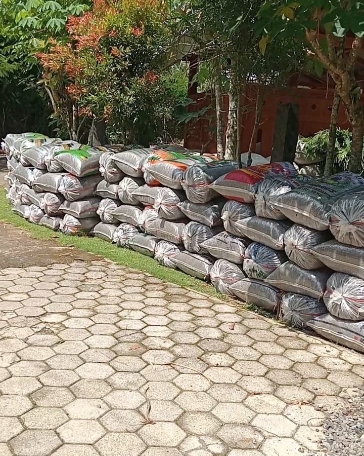

Bahan Dasar Kohe Kambing Etawa
Produk berbahan dasar kotoran kambing etawa yang berasal dari peternakan.
Menyediakan pupuk organik berbahan dasar kotoran kambing etawa, tersedia dalam pilihan original dan giling fermentasi.

UD. SINAR SAKTI 78 merupakan usaha yang menyediakan pupuk organik berbahan dasar kotoran kambing etawa. Berlokasi di Kaligesing, Purworejo, Jawa Tengah.
Kami menyediakan dua pilihan produk, yaitu kohe kambing etawa original dan kohe kambing etawa yang telah melalui proses penggilingan serta fermentasi.
Produk dikemas menggunakan karung dan melayani pengiriman khusus wilayah Pulau Jawa dengan pengantaran sampai lokasi.
Lihat pilihan produk →Tersedia dua jenis pupuk kohe kambing etawa yang dapat disesuaikan dengan kebutuhan Anda.
Pilihan pupuk organik berbahan dasar kotoran kambing etawa dengan informasi produk dan distribusi yang jelas.
Produk berbahan dasar kotoran kambing etawa yang berasal dari peternakan.
Tersedia pilihan kohe original dan kohe yang telah digiling serta difermentasi.
Dikemas menggunakan karung beras dengan ukuran sekitar 50 kg dan 25 kg.
Melayani pengiriman khusus wilayah Pulau Jawa, dengan pengantaran sampai lokasi.
Hubungi kami untuk mendapatkan informasi harga, ketersediaan produk, dan pengiriman.
Tentukan jenis pupuk organik yang sesuai dengan kebutuhan.
Sampaikan produk dan jumlah kebutuhan melalui WhatsApp.
Tanyakan harga, stok, alamat tujuan, dan biaya pengiriman.
Pesanan diproses dan dikirim ke lokasi tujuan.
Hubungi UD. SINAR SAKTI 78 untuk informasi harga, ketersediaan produk, dan pengiriman.
Temukan lokasi usaha kami di Kaligesing, Purworejo, Jawa Tengah. Gunakan peta untuk melihat lokasi dan mendapatkan petunjuk arah.
Kaligesing, Purworejo, Jawa Tengah, Indonesia.